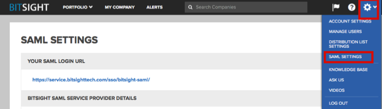

Log in to your BitSight account as an administrator.
In the top right corner, click the Settings icon, then select SAML SETTINGS from the dropdown menu.

In the CONFIGURE SAML METADATA section of the SAML SETTINGS page, enter the following (see screenshot at end of step for reference):
(Note that the values for Entity ID and HTTP POST Single Sign On URL are generated automatically.)
Provide the SAML metadata in one of the following ways:
Click CONFIGURE FROM URL: Copy and paste the following link:
Sign into the Okta Admin dashboard to generate this value.
Click CONFIGURE FROM FILE: Save the following to file:
Click CONFIGURE FROM TEXTBOX: Save the following to file and then paste:
Check the Enable SAML for user authentication box.

Done!
Notes:
SP-initiated flows, IdP-initiated flows, and Just In Time (JIT) provisioning are all supported.